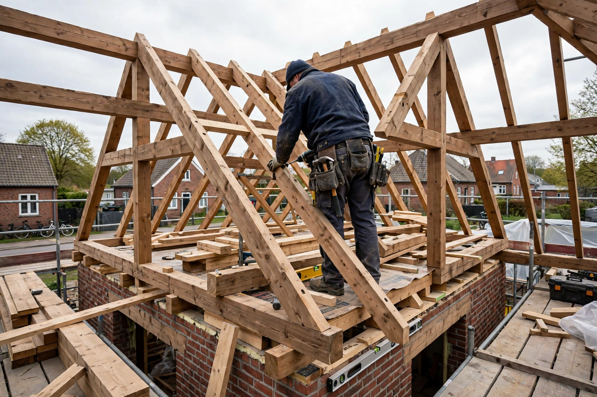
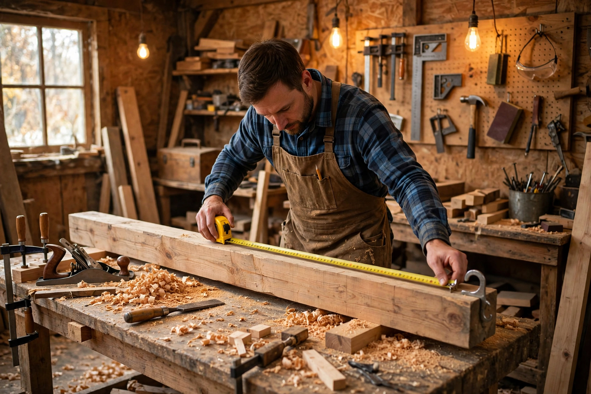
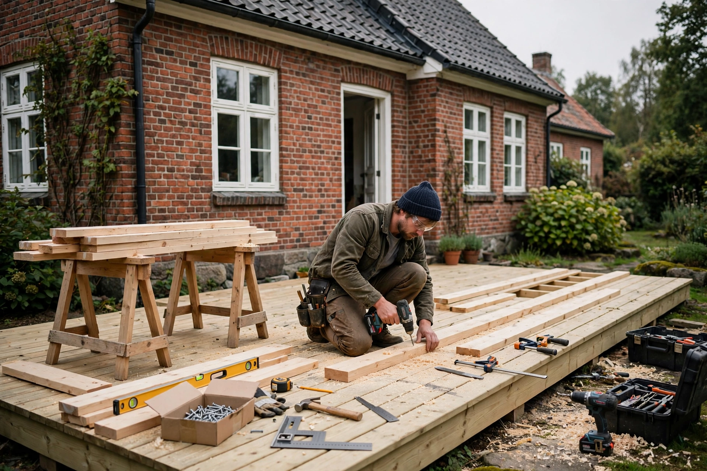

Målepunkt I · Bygningssnit & lokation
Randers NØ kernedistrikt
[ Diagnostisk gennemgang ]
Verificeret 5. nov 2026 af Tiyan Digital
Data indsamlet via direkte gennemgang af tomrerah.dk og sitemap
Potentiale ved systematisk opretningKan løftes til band A inden for 90 dage
Scoren 42/100 (band C) og målet band A (92) er Tiyan Digitals vurdering — vores egen redaktionelle vurdering på baggrund af de 9 fund i denne analyse, ikke en målt metrik fra Google eller et måleværktøj.

Randers NØ kernedistrikt

Strukturerede schema-data

48-timers svar & tillid
■ Arbejdsoverdragelse // Nøgleproblemstillinger
Fundene herunder udgør en stor del af årsagen til, at Tømrerfirmaet Aaquist & Hvam ApS taber positioner til lokale konkurrenter i Randers og omegn.
Observeret svaghed:
Der findes ingen verificerede anmeldelser (Trustpilot, Anmeld Håndværker eller Google Reviews) integreret på sitet.
Konsekvens for forretningen:
Tabt konvertering. Husejere i Randers vælger konkurrenter med synlige stjerner, før de ringer for et tilbud. Social proof mangler totalt ved første klik.
Observeret svaghed:
Der findes by-sider for Randers, Viborg, Hobro, Hadsund og Risskov — men siderne mangler lokale beviser: ingen projekter, billeder eller referencer fra den enkelte by, og ingen samlet oversigt over dækningsområdet.
Konsekvens for forretningen:
Uden lokale beviser har Google og kunderne ingen grund til at vælge jer frem for en tømrer, der dokumenterer sit arbejde i netop deres by.
Observeret svaghed:
Fotogalleriet indeholder billeder uden projektnavne, specifikke materialebeskrivelser, adresser eller før/efter-forklaringer.
Konsekvens for forretningen:
Billederne kan hverken indekseres af Google Billedsøgning eller forstås af AI-assistenter som ChatGPT/Gemini ved lokale anbefalinger.
[ Systematisk scoreboard ]
Band-vurderingerne herunder er Tiyan Digitals vurdering på baggrund af gennemgangen 5. november 2026 — ikke målte metrikker.
Moderat placering på generelle tømrertermer, men fraværende på specifikke opgaver (tag, terrasse, vinduer).
Kritisk mangel på sitet. Ingen anmeldelses-widgets eller direkte validering fra tilfredse bygherrer.
Korte beskrivelser på underside-niveau. Mangler tekniske materialespecifikationer og svar på byggetilladelser.
Serverresponstid målt til ca. 1,0 sek. (median, 5 målinger, 5. nov 2026). Reel indekseringsstatus forudsætter adgang til Search Console.
Ingen synlig LocalBusiness-markup med CVR-tilknytning, geo-koordinater og serviceområde fundet på sitet. Verificeres endeligt i den tekniske dybdegående gennemgang.
■ Verificeret benchmark // Postnr. 8900-8930 Randers
Direkte teknisk sammenligning baseret på en gennemgang af lokale tømrervirksomheders websites udført november 2026. Kun verificerede forhold er medtaget — se metode-siden for kilder.
| Revisionsparameter | Aaquist & Hvam — jeres site | Aaquist Byg & Montage | SK Tømrer og Snedker | AG Tømrer & Entreprise |
|---|---|---|---|---|
| 1. Synlige anmeldelser | 0 synlige anmeldelser | Viser Anmeld-Håndværker-citater | 192 anmeldelser, 4,9/5,0 på Anmeld-Håndværker | Kundeudtalelser med fulde navne |
| 2. Svartid & tryghedsløfte | “Indenfor 48 timer” (tekstform) | “Bliv kontaktet inden 1 dag” | Telefon via Anmeld-Håndværker-profil | Hurtig kontakt — ring direkte |
| 3. Galleri & bevisførelse | Kun rå fotos uden tekst/tag | Ingen synligt projektgalleri på forsiden | Anmelderbilleder på Anmeld-Håndværker | Før/efter-slidere & videocases |
| 4. Lokalt indhold & FAQ | By-sider uden lokal forankring, ingen lokal FAQ | Generiske tekster for Randers | Anmeldelser fra lokale kunder i Randers-området | Cases fra Sjælland (ingen Randers-omtale fundet) |
Værkstedets konklusion: Jeres håndværksmæssige kvalitet fejler intet, men jeres digitale facade matcher ikke niveauet hos de stærkeste konkurrenter i postnummer 8930. Gennemgå alle 9 fund i detaljer >
● Køreplan klar til drift // 90 dage
Vi har udarbejdet en konkret, trinvis køreplan fordelt over tre faser: Opretning af tillid, lokal forankring af by-siderne og teknisk GEO-optimering i Randers.